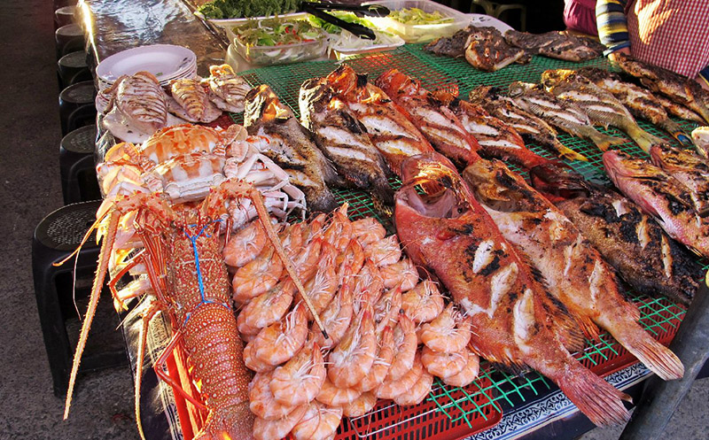
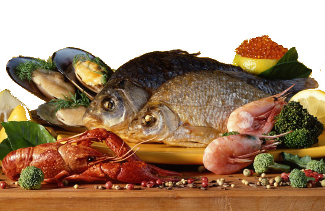
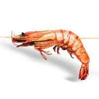
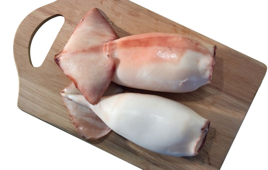
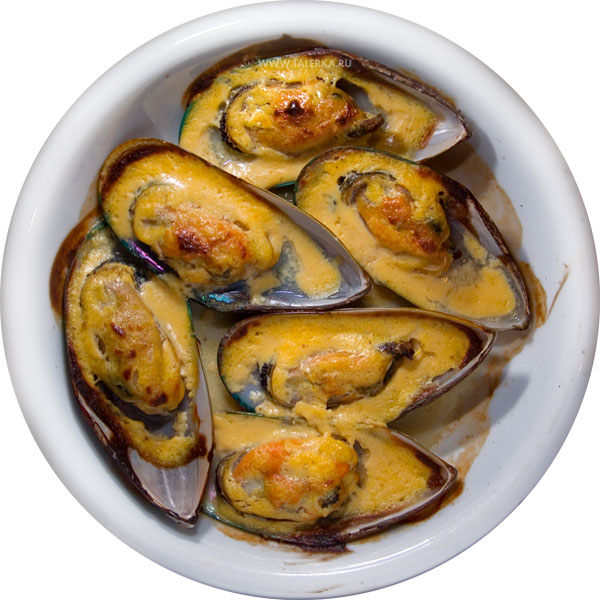
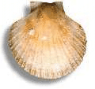
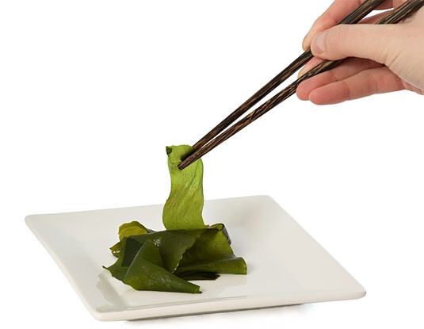
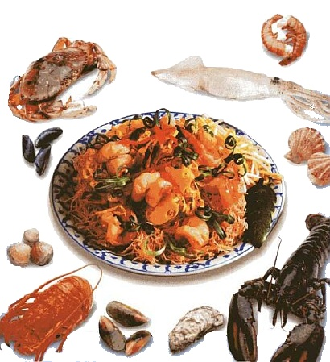

Что такое морепродукты


Когда-то в разгар «застоя», читая мамину книгу «Кулинария» 1956 года издания, слова «анчоусы», «крабы», «креветки» воспринимала, как иностранные. Теперь же, поездив по миру, легко отличаю «морских гребешков» от «морских петушков», и лангустов от омаров, очень люблю и ем с удовольствием, но только там, где могу быть уверена в их свежести!
Из всего огромного многообразия нерыбных продуктов морей и океанов чаще всего используют в пищу беспозвоночных и морские водоросли. Исследования, проведенные в разных странах мира, показали, что включение в рацион блюд из мидий, трепангов, кальмаров, крабов, креветок и других беспозвоночных, оказывает терапевтическое действие при атеросклерозе, заболеваниях желез внутренней секреции. Постоянное употребление в пищу этих морепродуктов в сочетании с витаминами группы В очень благоприятно сказывается на сохранении и поддержании потенции у мужчин.
Кроме того, дары океана действуют как успокаивающие средства. Замечено, что если поужинать одним из этих продуктов, то глубокий и спокойный сон гарантирован.
Ракообразные – крабы, креветки, криль, омары, лангусты и речные раки. Наиболее доступны для нас креветки и продукты переработки криля. В кулинарных целях мясо креветок используют в вареном и припущенном виде для приготовления горячих и холодных закусок, а также фаршированных блюд. Вкус креветок, как и крабов, нежный, со слегка сладковатым привкусом, что объясняется содержанием в их мясе углеводов. Мясо креветок и крабов очень ценно из-за богатого содержания белка и минеральных элементов. Это настоящая белковая пища с малым содержанием жира. Особенно много в нем йода — почти в сто раз больше, чем в говядине.

Мясо креветок богато натрием, калием, кальцием, магнием, серой, фосфором, железом, алюминием, медью, цинком, марганцем, свинцом и другими микроэлементами — в нем есть чуть ли не половина таблицы Менделеева.
Химический состав сырого мяса креветок: белки -14,1—22%, жиры — 0,7—2,3%, углеводы — 0,3—4,9%, минеральные вещества —1,5—7,2%. Немало в сыром мясе креветок и витаминов.
Чем полезны крабы и креветки? Их белок особенно богат таурином. Эта аминокислота активно питает мышцы и сосуды, сохраняя их эластичность и поддерживая все время в тонусе. Кроме того, фармацевты используют таурин для приготовления глазных капель, которые улучшают состояние глазных мышц, сетчатки и роговицы. Но ведь салат из крабов и креветок куда приятнее, чем лекарства! Таурин, получаемый из морепродуктов, дополняет состав энергетических напитков: Red Bull, Burn и других.
Криль – это мелкий креветкообразный рачок - ценный белковый продукт, содержащий в своем составе наряду с витаминами и минеральными веществами до 22% белка. Первым продуктом, полученным из криля, была паста «Океан». Однако для кулинаров и гурманов это действительно деликатесный продукт, который можно использовать для приготовления холодных блюд и горячих закусок, первых, вторых блюд и мучных изделий.

В Японии и Китае кальмаров едят сырыми, сушеными, маринованными, печеными и жареными. Употребляют в пищу даже глаза и присоски, высушенные на сковороде. Говорят, что по вкусу они напоминают орехи.
Кстати, кальмаров лучше варить от 5 до 10 минут или уж 40—45 минут, иначе их мясо будет жестким.
Двухстворчатые моллюски – мидии, гребешок и устрицы. Мидии (черные ракушки) – отличаются высокой

пищевой ценностью и сбалансированностью по содержанию незаменимых аминокислот, полиненасыщенных жирных кислот, фосфатидов, макро- и микроэлементов, водорастворимых витаминов группы В. Человек употреблял в пищу мидии еще 60-70 тыс. лет назад. Этот факт стал известен благодаря археологическим находкам. Мидии – это моллюски, обитающие колониями. Они гроздьями покрывают крупные камни, склеиваясь с ними специальными нитями, которые называются биссус. В давние времена из этих нитей производились ткани, из которой женщины шили себе одеяния. Тогда же добывание моллюсков являлось основным видом промысла.В современном мире мидии также являются деликатесом. Более полутора миллионов тонн вылавливается ежегодно.
Мидии, нежные на вкус, содержат большое количество белка (превосходят по количеству белка говядину и рыбу), низкокалорийны. Присутствие в мидии минеральных солей, железа, фосфора и витаминов делает их весьма полезными. Некоторые ученые считают мидии природной Виагрой. Товарным продуктом мидия становится, когда увеличивается в размере до 7-8 см, до этого ей надо прожить 14 месяцев. Мясо мидии употребляют в сочетании с овощами, майонезом, делают различные салаты. Хорошо сочетаются с крупами, картофелем.
Мидии являются активными фильтраторами. Процеживая через себя морскую воду и тем самым, очищая ее от загрязнения, моллюски накапливают вредные вещества и микроорганизмы. Одна особь пропускает через себя 70-80 литров воды. Накапливая в себе яд простейших, мидии становятся опасными. В клетках простейших находится сильнейший нервно-паралитический яд сакситоксин. Конечно, в клетках простейших его ничтожно мало, однако мидии могут накопить в себе опасное количество этого яда.
В наших магазинах мидии продаются в основном привозные, но уже появляются хозяйства, на фермах которых выращивают мидии. И тут уже надо относиться к этому с опаской. Почему? Да потому, что для того чтобы очищение мидий от накопленного в них яда сакситоксина было полным, моллюски не менее месяца надо выдерживать в чистой морской проточной воде. И уверенности, в том, что так поступают все фермеры, выращивающие мидии на продажу, нет. Кипячение тоже бесполезно, яд не разлагается под воздействием высокой температуры.
В Англии считают, например, что моллюски можно есть тогда, когда в названии есть буква р, то есть с сентября по апрель. Ядовитые мидии имеют специфический запах испорченной консервы, раковина их тонкая, ломкая со светлой окраской. Мидии вкусны только тогда, когда они выловлены в холодное время года.

Съедобная часть устриц составляет всего 5-8% всей устрицы. Мясо устриц по питательной ценности превосходит мясо таких рыб, как сазан и судак. Оно содержит до 14% белка, 0,3-2,2% жира, витамины группы В, С, D, жизненно важные элементы, такие как фосфор, железо, кобальт, кальций, магний, йод. Наиболее вкусны устрицы в живом виде с соком лимона. Промытое и охлажденное мясо устрицы имеет приятный освежающий вкус. В кулинарии устриц используют вареными и жареными, чаще всего во фритюре. Между прочим, употребление всего шести устриц обеспечивает половину ежедневной потребности в йоде, кальции, фосфоре, железе и меди. Кстати, устрицы продают во всем мире (и в фешенебельных ресторанах, и в дешевых забегаловках) лишь в одном виде — свежем, у нас же, за редким исключением, устрицы продают только в замороженном виде, а это значит, что есть их сырыми (размороженными) категорически нельзя, даже если очень хочется. Размораживать и употреблять в пищу без термической обработки устрицы нельзя. Сырыми их едят только в день улова. Тем не менее, и свежие устрицы таят в себе угрозу.
 Все
дело в том, что в устрицах зачастую проживают бактерии, близкие
родственники холерного вибриона, но хворь они порождают иную. У здоровых
«глотателей» устриц развивается гастроэнтерит, подобный классическому
отравлению — с тошнотой, рвотой и остальными «прелестями».
Все
дело в том, что в устрицах зачастую проживают бактерии, близкие
родственники холерного вибриона, но хворь они порождают иную. У здоровых
«глотателей» устриц развивается гастроэнтерит, подобный классическому
отравлению — с тошнотой, рвотой и остальными «прелестями».
У людей с нарушением работы печени бактерия попадает в кровоток и вызывает тягчайший шок, что может привести к летальному исходу. Употреблять в пищу можно только свежие устрицы с плотно закрытыми створками.
Коварные бактерии внешность устриц никак не изменяют. Поэтому, если нет желания играть в «русскую рулетку» с французским деликатесом, переходите на устриц, прошедших термическую обработку, — это единственный приемлемый способ. Впрочем, это касается и морской рыбы — в сыром виде она может содержать «родственников» холеры.
Иглокожие – трепанг, голотурия и кукумария. Из трепангов и кукумарии готовят сушеную, варено-мороженную продукцию и консервы. Весьма своеобразную форму имеют трепанги, похожие более на огурцы, поэтому их иногда так и называют «морскими огурцами». Но «огурцом» он выглядит не всегда: все зависит от состояния животного – передвигающийся трепанг напоминает червеобразное существо, и если его испугать, то тело округляется и становится почти шарообразным.
Мясо трепанга содержит меньше белков, чем мясо устриц, мидий и морского гребешка, но в нем значительно больше минеральных веществ: хлористых и сернокислых солей, соединений фосфора, кальция, магния, йода, железа, марганца, меди.
Трепанг содержит в тысячу раз больше соединений меди и в тысячу раз больше соединений железа, чем рыба, в сто раз больше соединений йода, чем другая морская живность, в десять тысяч раз больше йода, чем говядина, свинина и баранина. В трепангах есть витамины: С, В12, тиамин и рибофлавин. Японские врачи прописывают переутомленным и ослабленным людям трепангов, которых в дальневосточных странах называют «морским женьшенем». Употребление трепангов в пищу позволяет снять утомляемость и восстановить силы. Лучше всего этих моллюсков использовать для закусок, вторых горячих блюд и первых блюд (рыбных солянок).

Морские водоросли – красные, бурые и зеленые. Морская капуста (ламинария), а частично и зеленые водоросли – ульва, пожалуй, единственный тип водорослей, которые употребляются в пищу. Морские водоросли являются единственным растительным сырьем для производства стабилизаторов, загустителей и студнеобразователей, таких как агар, агароид, альгинат натрия, альгиновая кислота и др. Эти вещества незаменимы при производстве зефира, мармелада, кремов, мороженого, майонеза и др. Из всего многообразия видов морской капусты для производства блюд используют ламинарию японскую и сахаристую. Для лучшей сохранности ее заготавливают в сушеном и мороженном виде. Наибольшую ценность представляет морская капуста как источник минеральных веществ и витаминов А, С и группы В. Содержащийся в капусте йод делает ее незаменимой для лечения и профилактики болезней щитовидной железы, по содержанию йода ламинария занимает среди морепродуктов первое место. Содержащиеся в морской капусте кобальт и никель предотвращают нарушения в работе поджелудочной железы, способствуют секреции инсулина. Кроме того, в составе морской капусты присутствуют микроэлементы, необходимые для нормального функционирования надпочечников и гипофиза - магний и марганец соответственноНа 100 г продукта приходится: белков -0,9 г, жиров - 0,2 г, калия - 970 мг, кальция - 40 мг, магния - 170 мг, фосфора -55 мг, железа - 16 мг, а калорийность - всего 5 ккал. Низкая калорийность позволяет использовать морскую капусту при ожирении. В кулинарных целях морскую капусту используют для приготовления гарниров, приправ к мясным и рыбным блюдам, салатов, компонентов первых блюд, а так же для производства консервов в сочетании с овощами, мясом криля, кукумарией и т.д.Дары моря – великолепный источник йода и легкоусвояемого белка. Если мясной белок переваривается в организме примерно пять часов, то на переваривание белка морепродуктов уходит всего два-три часа. Очень важно, чтобы морепродукты были только «первой свежести», иначе можно сильно отравиться. В магазинах креветки, мидии, устрицы и т.д. чаще всего продают замороженными. После разморозки их нельзя замораживать повторно.

Во многих странах мира основу питания жителей составляют не хлеб или мясо, а блюда из морепродуктов, так как они быстрее готовятся, легче перевариваются и лучше усваиваются. Борцы за правильное питание всё чаще рекомендуют морепродукты! А еще такое меню – это ваша страховка от:
- сердечно-сосудистых заболеваний. Полезные свойства морепродуктов заключаются в том, что они содержат уникальные полиненасыщенные жирные кислоты омега-3 и омега-6. Попадая в организм, они снижают уровень вредного холестерина в крови.
- лишних жировых накоплений. В 100 граммах мидий всего 3 грамма жира, в креветках – 2, а в кальмарах и того меньше – 0,3 грамма. Калорийность морепродуктов также поражает рекордно низкими цифрами – 70-85 килокалорий. Для сравнения, в 100 граммах телятины 287 килокалорий. Польза креветок, крабов и других морепродуктов очевидна!
- нарушения работы пищеварительного тракта. Если мясной белок организм перерабатывает примерно пять часов, то с белком даров моря он справляется в два раза быстрее. Ведь по сравнению с мясом дичи и домашних животных в морепродуктах гораздо меньше грубой соединительной ткани, а следовательно, морские обитатели являются более полезным продуктом, чем мясо.
- болезней щитовидной железы. Полезные свойства морепродуктов заключаются в огромном количестве дефицитного микроэлемента – йода. Он не вырабатывается организмом человека, как это происходит с другими микроэлементами а имеется лишь в некоторых продуктах. Но достаточно съесть 20-50 граммов крабов или креветок, и суточная норма йода вам обеспечена. А значит, есть "топливо" для работы щитовидной железы и мозга. В Японии, стране с самой "морской" кухней мира, на миллион жителей приходится только один случай заболевания щитовидной железы. Вот что означает настоящее здоровое питание! В отличие от искусственно йодированных продуктов (соли, молока, хлеба) йод из морепродуктов не улетучивается при первой же встрече с солнечными лучами и кислородом.
- эмоциональных перегрузок. Замечено, что народы, проживающие вблизи морей и океанов, более доброжелательны друг к другу, чем их собратья "из глубинки". Во многом этому способствует их рацион, основанный на дарах моря. Крепкая дружба витаминов группы В, РР, магния и меди объединяет практически все морепродукты. Это и есть главная формула уравновешенности и веселого нрава. А фосфор гарантирует полное и безоговорочное усвоение всех витаминов группы В. Польза морепродуктов налицо!
- снижения либидо. Говорят, Казанова перед любовным свиданием
съедал на ужин до 70 устриц, запивая их шампанским. Все потому, что
морепродукты считаются мощнейшим афродизиаком и способствует выработке
"гормона страсти" тестостерона благодаря высокой концентрации цинка и
селена. Правда, повторять подобный подвиг во имя любви мы не советуем.
Даже одна порция легкого салата из ракообразных и моллюсков может
 дать подобный эффект.
дать подобный эффект.
Итак, польза от употребления крабов, креветок и прочих морепродуктов несомненна — они богаты белками, жирами, витаминами и минеральными элементами, в числе которых фосфор, кальций, железо, медь, йод. Недаром в тех странах, где широко употребляются морепродукты, люди меньше болеют и живут дольше!